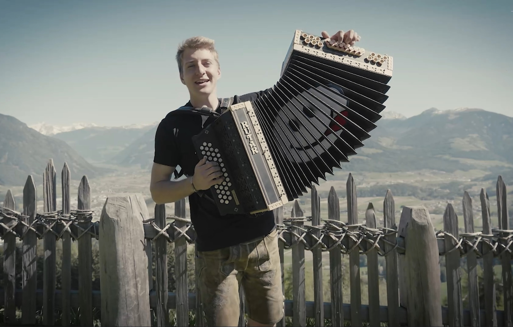

Live am 05. Juli 2026 – bitte für mich abstimmen!
Deutschland:
01371 – 36 55 01
01371 – 36 55 02
Ausland:
0049 – 1805 140 09 01
0049 – 1805 140 09 02
👉 Die Endziffer wird erst live vergeben.
Ich freue mich über jede Unterstützung!
Ich bin derzeit mit meinem Titel in der ORF Tirol Hitparade vertreten. Es kann jederzeit für mich abgestimmt werden – ich freue mich über jede Unterstützung!
Jetzt abstimmenIch bin Rene Schneider, 20 Jahre alt, und komme aus dem wunderschönen Südtirol. Meine musikalische Reise begann bereits im Alter von fünf Jahren mit der steirischen Harmonika. Mit viel Fleiß, unzähligen Übungsstunden und großer Leidenschaft für die Musik – sowie der wertvollen Ausbildung beim Harmonika-Weltmeister Denis Novato – konnte ich mich musikalisch stetig weiterentwickeln und wertvolle Erfahrungen sammeln.
Bereits in jungen Jahren stand ich regelmäßig auf der Bühne und durfte erste Erfolge feiern. So wurde ich mit einer Goldauszeichnung beim Harmonika Grand Prix sowie mit einer Goldauszeichnung bei einer Weltmeisterschaft in Slowenien ausgezeichnet.
Heute trete ich regelmäßig auf und begeistere mein Publikum mit Volksmusik, Oberkrainer-Klängen und modernem Schlager. Neben der Harmonika widme ich mich auch weiteren musikalischen Bereichen und Instrumenten und entdecke dabei immer wieder neue Facetten meiner Leidenschaft für die Musik. Gleichzeitig nimmt auch der Gesang einen immer größeren Stellenwert in meinem musikalischen Schaffen ein.
Mit meinem ersten eigenen Titel erzähle ich meine persönliche musikalische Geschichte und gebe einen authentischen Einblick in meinen bisherigen Weg als Musiker.

Auf YouTube ansehen

Mit beiden Gruppen bin ich regelmäßig auf Bühnen unterwegs. Für Veranstaltungen, Feiern oder Events können wir jederzeit gebucht werden.
👉 Anfrage per E-Mail:
music@schneider-rene.com